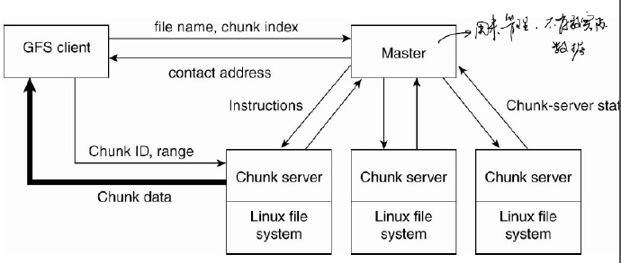
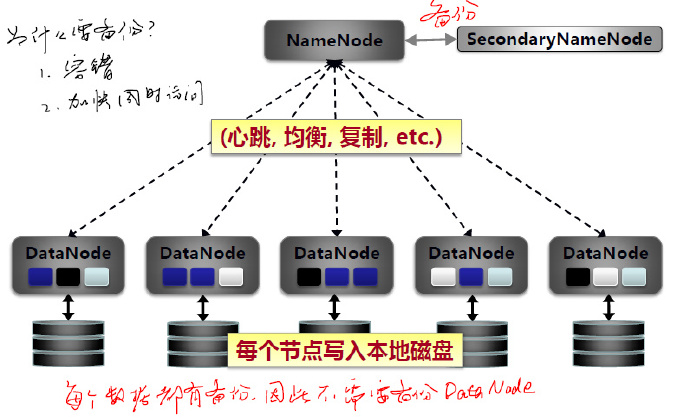

以HDFS为例，介绍分布式文件系统
文件系统
文件系统的功能
- 文件的按名存取（基本功能）
- 文件目录的建立和维护（用于实现上述基本功能）
- 实现逻辑文件到物理文件的转换（核心内容）
- 文件存储空间的分配和管理
- 数据保密、保护和共享
- 提供一组用户使用的操作
文件
- 文件是由文件名字标识的一组信息的集合
- 各操作系统的文件命名规则略有不同
- 实现按名存取的文件系统的优点
- 将用户从复杂的物理存储地址管理中解放出来
- 可方便地对文件提供各种安全、保密和保护措施
- 实现文件的共享（同名共享、异名共享）
- 如何实现“按名存取”？
- 当用户要求存取某个文件时，系统查找目录文件，获得对应的文件目录
- 在文件目录中，根据用户给定的文件名寻找到对应该文件的文件控制块（文件目录项）
- 通过文件控制块所记录的该文件的相关信息（如文件信息存放的相对位置或文件信息首块的物理位置）依次存取该文件的内容。
文件目录
- 概念
- 文件目录：建立和维护的关于系统的所有文件的清单
- 文件控制块：每个目录项对应一个文件的信息描述
- 目录文件：目录信息也以文件的形式存放
- 文件控制块的基本内容
- 文件存取控制信息：如文件名、用户名、文件主存取权限等
- 文件结构信息：文件逻辑结构、文件的物理结构等
- 文件使用信息：已打开该文件的进程数、文件的修改 情况等
- 文件管理信息：文件建立日期、文件访问日期等
文件的物理结构
- 顺序文件，连续存储
- 链接文件
- 索引文件
分布式文件系统
体系架构
- 主节点进行管理，从节点存储数据
- 
- 文件切分成块，分散存储在从节点上
文件访问
单机多进程访问同一文件
- 读写锁
不同机器上进程访问同一文件
- 加锁效率太低，Hadoop使用一种
immutable file
- 加锁效率太低，Hadoop使用一种
备份与一致性
- 客服端备份
Client -server DFS- 在客户端进行备份，将更改过的文件传到server，改变时client和server不一致
- 服务器端备份
Cluster-based DFS
HDFS
设计目标
- 假设硬件的异常比软件的异常更加常见
- 应用程序关注的是吞吐量，而不是响应时间。
- 文件仅支持追加，而不允许修改。
- 计算和存储采用就近原则，把代码放在远程计算，不搬运数据
数据块
- 对于Hadoop来说，都是处理的大文件
- 文件由数据块集合组成
- 通常每块的大小为64MB
- 每个数据块在本地文件系统已单独的文件进行存储（Linux文件系统）
- 与操作系统中文件block的区别
- 操作系统的block是读取的物理单元
- 目的是节省I/O
- block总是一样大
- 而在HDFS中是为了切大文件
- 若最后一块小于64M，则保持原有大小
- 操作系统的block是读取的物理单元
体系结构

NameNode- 每个集群只有一个
- 负责文件系统元数据操作、数据块的复制和定位
SecondaryNameNode- 用于
NameNode的备份节点
- 用于
DataNode- 集群中每个节点一个数据节点
- 负责数据块的存储
- 为客户端提供实际文件数据
NameNode
- 作用
- 管理节点、接收用户的操作请求
- 核心数据文件包括
元数据- 保存在内存中
镜像文件fsimage: 维护文件系统树以及文件树中所有的文件/目录的元数据（包括文件中块所在的数据节点的位置信息）操作日志文件EditLog：记录所有针对文件的创建、删除、重命名等操作
SecondaryNameNode
- 执行过程：
- 定期从
NameNode上下载fsimage,edits。二者合并，生成新的fsimage在本地保存，并写回NameNode - 是“检查点”，不是“热备份”
- 并不能保证实时都一样
- 定期从
- 若直接操作
image，代价很高，总是先更改日志（记录操作）
DataNode
- 作用
- 提供文件的存储
- 文件块（block）：最基本的存储单位，一个Linux文件
- HDFS默认Block大小是64MB，
- 以一个256MB文件，共有256/64=4个Block
- 不同于普通文件系统的是，HDFS中，如果一个文件小于一个数据块的大小，并不占用整个数据块存储空间
- 数据备份：默认是三个
- 因此，
NamNode处理控制流，告诉客户存在哪里；而DataNode处理数据流，客户端直接与其进行传输。
文件访问
文件写入HDFS
可以并行写入不同节点
数据存放策略
目标：负载均衡，快速访问，支持容错
- 第一个副本：放置在上传文件的数据节点；如果是集群外提交，则随机挑选一台磁盘不太满、CPU不太忙的节点(快速写入)
- 第二个副本：放置在与第一个副本不同的机架rack的节点上(减少跨rack的网络流量)
- 第三个副本：与第一个副本相同机架的其他节点上(应对交换机故障)
- 更多副本：随机节点
从HDFS读取文件
从各个数据节点上传数据块，可以并行
数据读取策略
- 当客户端读取数据时，从
NameNode获得数据块不同副本的存放位置列表，列表中包含了副本所在的数据节点 - 可以调用API来确定客户端和这些数据节点所属的机架ID
- 最近者优先原则：当发现某个数据块副本对应的机架ID和客户端对应的机架ID相同时，就优先选择该副本读取数据，如果没有发现，就随机选择一个副本读取数据
文件访问模型
- 一次写入多次读取
- 一个文件经过创建、写入和关闭后就不得改变文件中的内容
- 仅容许追加append（）
- 直接对文件增加一个
block
- 直接对文件增加一个
- 对于单文件，不支持并发写，只支持并发读
append同一个文件只允许同时执行一个操作
- 修改内容需删除，重新写入
- 好处：避免读写冲突、无需文件锁
备份与一致性
- 一个文件有若干备份
- 备份之间是否可能存在不一致？
- 写入成功的备份之间是强一致的
- 一次写入多次读取
容错机制
DataNode故障
- “宕机”，节点上面的所有数据都会被标记为“不可读”
- 数据块自动复制到剩余的节点上以保证满足备份因子
- 由
NameNode监控
- 定期检查备份因子
NameNode故障
- 根据
SecondaryNameNode中的FsImage和Editlog数据进行恢复
HDFS功能
- HDFS适合做什么
- 大文件存储
- 流式数据访问
- HDFS不适合做什么
- 大量小文件
- 随机读取
- 延迟读取